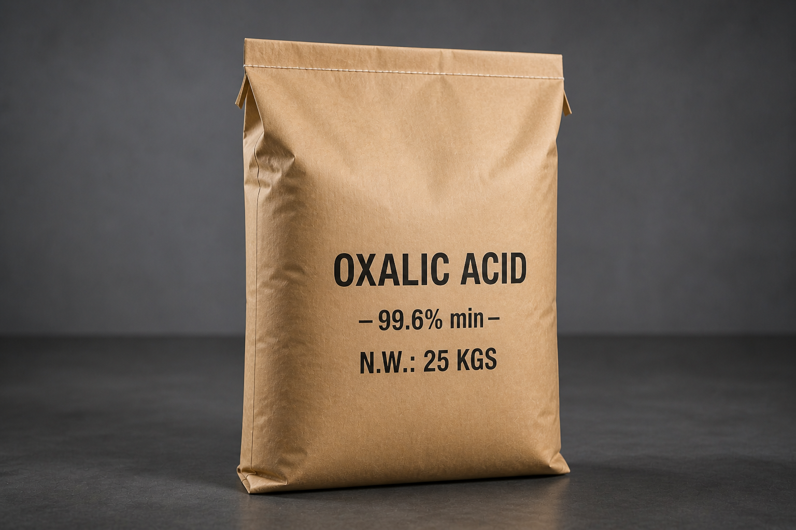
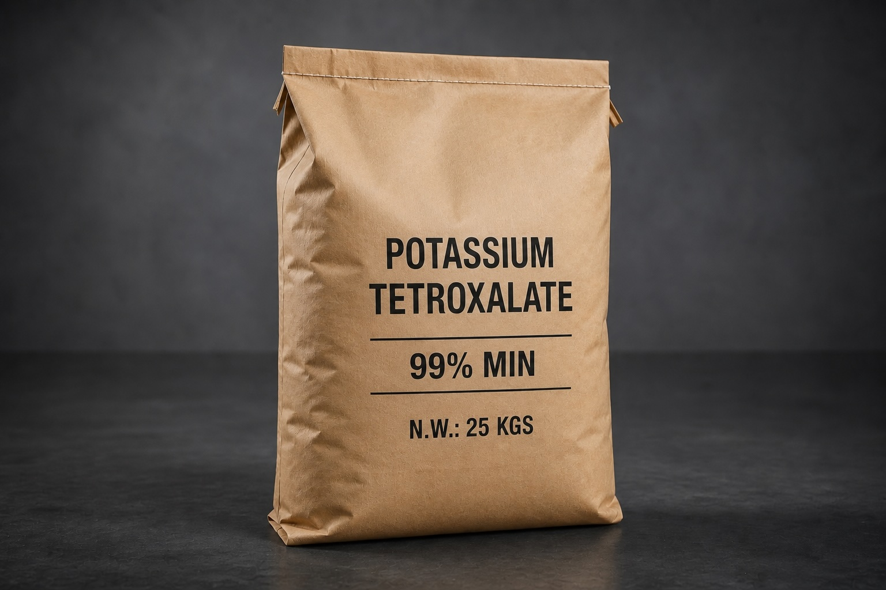
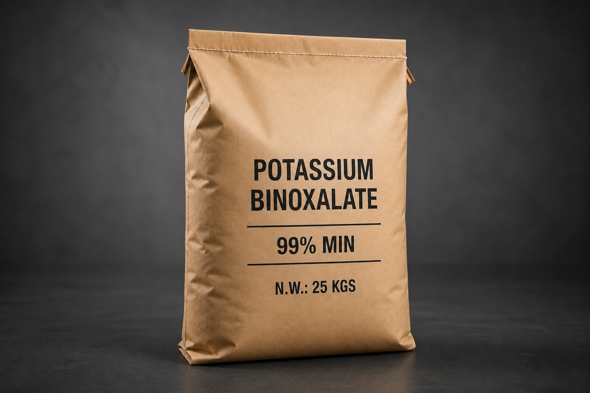

Oxalic Acid
Crystalline dihydrate. A versatile reducing and chelating acid used across textile bleaching, leather processing, marble and stone polishing, metal-surface cleaning, electronics rinse chemistries, and as an intermediate in pharma synthesis.

Potassium Tetroxalate (PTO)
Acid potassium oxalate dihydrate, also known as “salt of sorrel”. Mild reducing agent used historically and industrially to remove ink stains, rust, and to polish brass and woodworking surfaces.

Potassium Binoxalate (PBO)
Acid potassium oxalate. Used in metal-surface cleaning chemistries, leather and textile finishing baths, and as a precursor in laboratory analytical reagents.

Analytical capability, under one roof.
A separate wet-chemistry and instrumentation suite supports our chemicals line — assay titration, Karl Fischer moisture, ICP for trace metals, and HPLC where the customer specifies it.
From assay to ppm.
Each batch is titrated for assay, weighed by Karl Fischer for moisture, screened by ICP-OES for sulphate, chloride, and heavy-metal trace, and held against a customer-specific specification sheet before release. Certificates of Analysis travel with the bag, sealed at packing.
TITRATION · KF · ICP-OES · HPLC